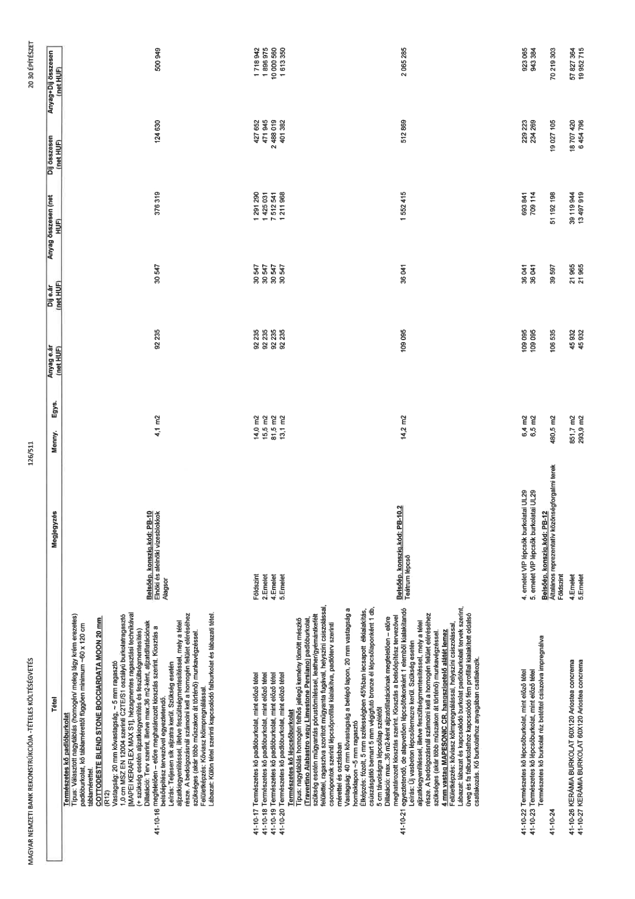

| Tétel | Megjegyzés | Menny. | Egys. | Anyag e.ár (net HUF) | Díj e.ár (net HUF) | Anyag összesen (net HUF) | Díj összesen (net HUF) | Anyag+Díj összesen (net HUF) |
|---|---|---|---|---|---|---|---|---|
| 41-10-16 | Természetes kő padlóburkolat Típus: Választott nagytáblás (homogén/ meleg lágy krém erezetes) padlóburkolat, kő táblamérettől függően minimum ~60 x 120 cm táblamérettel. COTTODESTE BLEND STONE BOCCIARDATA MOON 20 mm (R12) Vastagság: 20 mm kővastagság, ~ 5 mm ragasztó 1,0 cm MSZ EN 12004 szerinti C2TE/S1 osztályú burkolatragasztó [MAPEI KERAFLEX MAX S1], hézagmentes ragasztási technikával (+ szükség esetén aljzatszigetelés és feszültségmentesítés) Dilatáció: Terv szerint, illetve max. 36 m2-ként, aljzatdilatációknak megfelelően - előre meghatározott kiosztás szerint. Kiosztás a belsőépítész tervezővel egyeztetendő. Leírás: Teljesen sík aljzatra kerül. Szükség esetén aljzatkiegyenlítéssel, illetve feszültségmentesítéssel, mely a tétel része. A bedolgozásnál számolni kell a homogén felület eléréséhez szükséges (akár több műszakon át történő) munkavégzéssel. Felületképzés: Köviasz köimpregnálással. Lábazat: Külön tétel szerinti kapcsolódó falburkolat és lábazati tétel. Belsőép. konszig.kód: PB-10 Elnöki és alelnöki vizesblokkok Alagsor | 4,1 | m2 | 92 235 | 30 547 | 376 319 | 124 630 | 500 949 |
| 41-10-17 | Természetes kő padlóburkolat, mint előző tétel Földszint | 14,0 | m2 | 92 235 | 30 547 | 1 291 290 | 427 652 | 1 718 942 |
| 41-10-18 | Természetes kő padlóburkolat, mint előző tétel 2.Emelet | 15,5 | m2 | 92 235 | 30 547 | 1 425 031 | 471 945 | 1 896 975 |
| 41-10-19 | Természetes kő padlóburkolat, mint előző tétel 4.Emelet | 81,5 | m2 | 92 235 | 30 547 | 7 512 541 | 2 488 019 | 10 000 560 |
| 41-10-20 | Természetes kő padlóburkolat, mint előző tétel 5.Emelet | 13,1 | m2 | 92 235 | 30 547 | 1 211 968 | 401 382 | 1 613 350 |
| 41-10-21 | Természetes kő lépcsőburkolat Típus: nagytáblás homogén felhős jellegű kemény tömött mészkő (Travertino Alabastro vagy Limestone Persiano) padlóburkolat, szükség esetén műgyantás pórustömítéssel, leather/gyémántkefélt felülettel, ragasztva szorított műgyanta fugával, helyszíni csiszolással, csomópontok szerinti lépcsőprofillal kialakítva, padlóterv szerinti mérettel és osztásban Vastagság: 40 mm kővastagság a belépő lapon, 20 mm vastagság a homloklapon ~5 mm ragasztó Élképzés: fózolt, 5 mm szélességben 45%-ban lecsapott élkialakítás, csúszásgátló bemart 5 mm végigfutó bronze él lépcsőlaponként 1 db, 5 cm távolságra lépcsőlap szélétől Dilatáció: max. 36 m2-ként aljzatdilatációnak megfelelően - előre meghatározott kiosztás szerint. Kiosztás a belsőépítész tervezővel egyeztetendő, de alapvetően lépcsőfokonként 1 elemből kialakítandó Leírás: Új vasbeton lépcsőlemezre kerül. Szükség esetén aljzatkiegyenlítéssel, illetve feszültségmentesítéssel, mely a tétel része. A bedolgozásnál számolni kell a homogén felület eléréséhez szükséges (akár több műszakon át történő) munkavégzéssel. 4 mm vastag MAPESONIC CR hangszigetelő alátét lemez Felületképzés: köviasz köimpregnálással, helyszíni csiszolással. Lábazat: lábazat és kapcsolódó burkolat padlóburkolati tervek szerint, üveg és fa falburkolathoz kapcsolódó fém profillal kialakított oldalsó csatlakozás. Kő burkolathoz anyagában csatlakozik. Belsőép. konszig.kód: PB-10.2 Teátrum lépcső | 14,2 | m2 | 109 095 | 36 041 | 1 552 415 | 512 869 | 2 065 285 |
| 41-10-22 | Természetes kő lépcsőburkolat, mint előző tétel 4. emelet VIP lépcsők burkolatai UL29 | 6,4 | m2 | 109 095 | 36 041 | 693 841 | 229 223 | 923 065 |
| 41-10-23 | Természetes kő lépcsőburkolat, mint előző tétel 5. emelet VIP lépcsők burkolatai UL29 | 6,5 | m2 | 109 095 | 36 041 | 709 114 | 234 269 | 943 384 |
| 41-10-24 | Természetes kő burkolat réz betéttel csiszolva impregnálva Belsőép. konszig.kód: PB-12 Általános reprezentatív közönségforgalmi terek Földszint | 480,5 | m2 | 106 535 | 39 597 | 51 192 198 | 19 027 105 | 70 219 303 |
| 41-10-26 | KERÁMIA BURKOLAT 60X120 Ariostea concrema 4.Emelet | 851,7 | m2 | 45 932 | 21 965 | 39 119 944 | 18 707 420 | 57 827 364 |
| 41-10-27 | KERÁMIA BURKOLAT 60X120 Ariostea concrema 5.Emelet | 293,9 | m2 | 45 932 | 21 965 | 13 497 919 | 6 454 796 | 19 952 715 |
